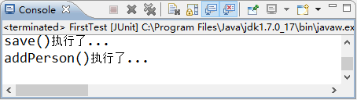

首页 > 编程笔记
Spring DI（依赖注入）的实现方式：属性注入和构造注入
依赖注入（Dependency Injection，DI）和控制反转含义相同，它们是从两个角度描述的同一个概念。
当某个 Java 实例需要另一个 Java 实例时，传统的方法是由调用者创建被调用者的实例（例如，使用 new 关键字获得被调用者实例），而使用 Spring 框架后，被调用者的实例不再由调用者创建，而是由 Spring 容器创建，这称为控制反转。
Spring 容器在创建被调用者的实例时，会自动将调用者需要的对象实例注入给调用者，这样，调用者通过 Spring 容器获得被调用者实例，这称为依赖注入。
依赖注入主要有两种实现方式，分别是属性 setter 注入和构造方法注入。具体介绍如下。
下面通过属性 setter 注入的案例演示 Spring 容器是如何实现依赖注入的。具体步骤如下。
从图 1 的输出结果中可以看出，使用 Spring 容器获取 userService 的实例后，调用了该实例的 addPerson() 方法，在该方法中又调用了 PersonDao 实现类中的 add() 方法，并输出了结果。这就是 Spring 容器属性 setter 注入的方式，也是实际开发中较为常用的一种方式。
当某个 Java 实例需要另一个 Java 实例时，传统的方法是由调用者创建被调用者的实例（例如，使用 new 关键字获得被调用者实例），而使用 Spring 框架后，被调用者的实例不再由调用者创建，而是由 Spring 容器创建，这称为控制反转。
Spring 容器在创建被调用者的实例时，会自动将调用者需要的对象实例注入给调用者，这样，调用者通过 Spring 容器获得被调用者实例，这称为依赖注入。
依赖注入主要有两种实现方式，分别是属性 setter 注入和构造方法注入。具体介绍如下。
1）属性 setter 注入
指 IoC 容器使用 setter 方法注入被依赖的实例。通过调用无参构造器或无参 static 工厂方法实例化 bean 后，调用该 bean 的 setter 方法，即可实现基于 setter 的 DI。2）构造方法注入
指 IoC 容器使用构造方法注入被依赖的实例。基于构造器的 DI 通过调用带参数的构造方法实现，每个参数代表一个依赖。下面通过属性 setter 注入的案例演示 Spring 容器是如何实现依赖注入的。具体步骤如下。
1. 创建 PersonService 接口
在 springDemo01 项目的 com.mengma.ioc 包下创建一个名为 PersonService 的接口，该接口中包含一个 addPerson() 方法，如下所示。
package com.mengma.ioc;
public interface PersonService {
public void addPerson();
}
2. 创建接口实现类 PersonServiceImpl
在 com.mengma.ioc 包下创建一个名为 PersonServiceImpl 的类，该类实现了 PersonService 接口，如下所示。
package com.mengma.ioc;
public class PersonServiceImpl implements PersonService {
// 定义接口声明
private PersonDao personDao;
// 提供set()方法，用于依赖注入
public void setPersonDao(PersonDao personDao) {
this.personDao = personDao;
}
// 实现PersonService接口的方法
@Override
public void addPerson() {
personDao.add(); // 调用PersonDao中的add()方法
System.out.println("addPerson()执行了...");
}
}
上述代码中，首先声明了 personDao 对象，并为其添加 setter 方法，用于依赖注入，然后实现了 PersonDao 接口的 addPerson() 方法，并在方法中调用 save() 方法和输出一条语句。3. 在 applicationContext.xml 中添加配置信息
在 applicationContext.xml 配置文件中添加一个 <bean> 元素，用于实例化 PersonServiceImpl 类，并将 personDao 的实例注入到 personService 中，其实现代码如下所示：
<bean id="personService" class="com.mengma.ioc.PersonServiceImpl">
<!-- 将personDao实例注入personService实例中 -->
<property name="personDao" ref="personDao"/>
</bean>
4. 编写测试方法
在 FirstTest 类中创建一个名为 test2() 的方法，编辑后如下所示：
@Test
public void test2() {
// 定义Spring配置文件的路径
String xmlPath = "applicationContext.xml";
// 初始化Spring容器，加载配置文件
ApplicationContext applicationContext = new ClassPathXmlApplicationContext(
xmlPath);
// 通过容器获取personService实例
PersonService personService = (PersonService) applicationContext
.getBean("personService");
// 调用personService的addPerson()方法
personService.addPerson();
}
5. 运行项目并查看结果
使用 JUnit 测试运行 test2() 方法，运行成功后，控制台的输出结果如图 1 所示。

图 1 运行结果
图 1 运行结果
从图 1 的输出结果中可以看出，使用 Spring 容器获取 userService 的实例后，调用了该实例的 addPerson() 方法，在该方法中又调用了 PersonDao 实现类中的 add() 方法，并输出了结果。这就是 Spring 容器属性 setter 注入的方式，也是实际开发中较为常用的一种方式。
关注公众号「站长严长生」，在手机上阅读所有教程，随时随地都能学习。内含一款搜索神器，免费下载全网书籍和视频。

微信扫码关注公众号